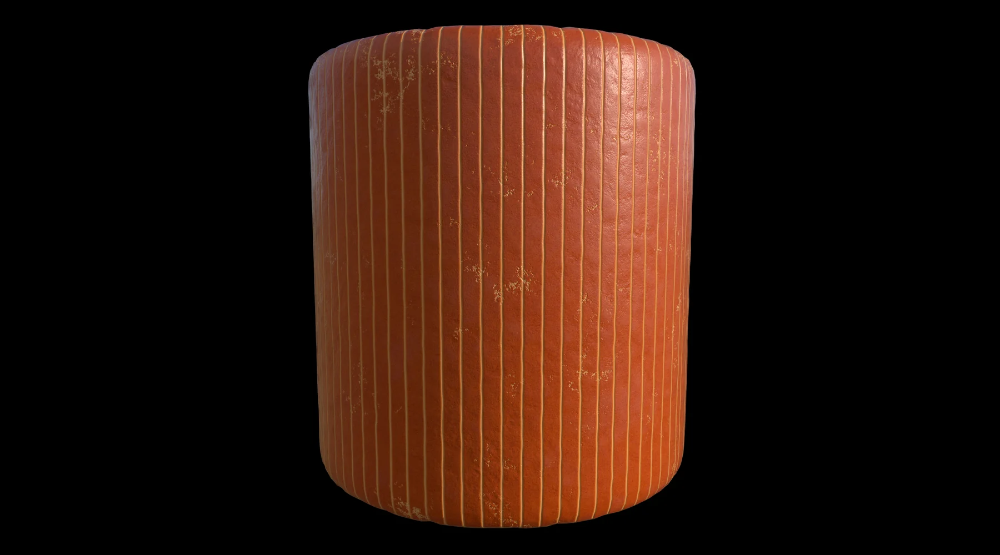
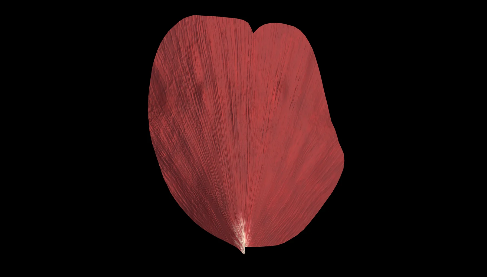
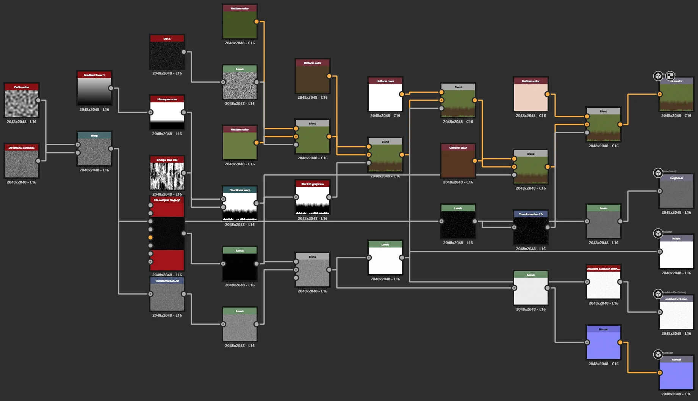
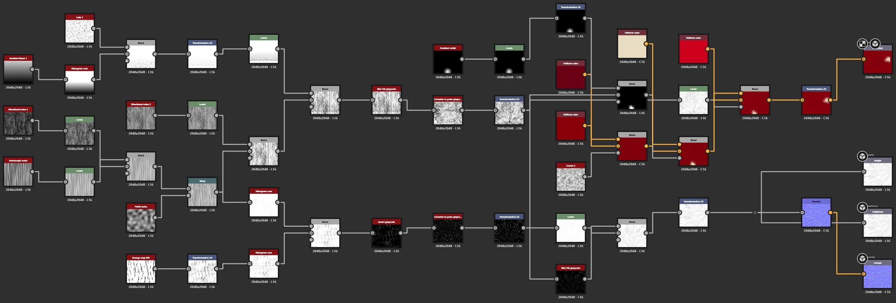
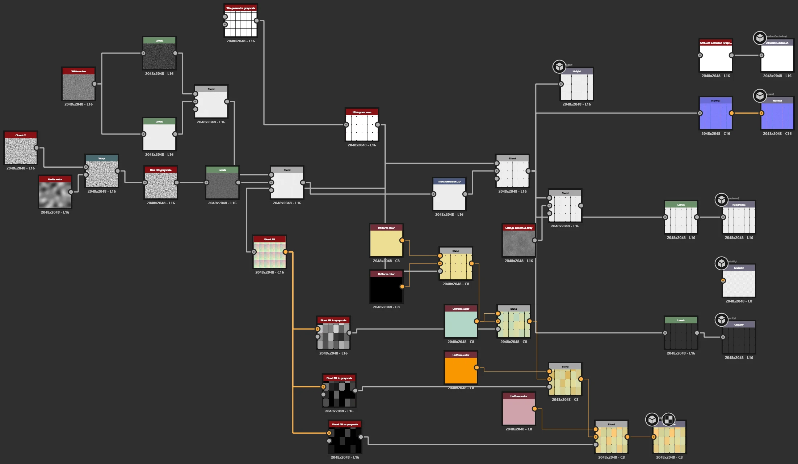
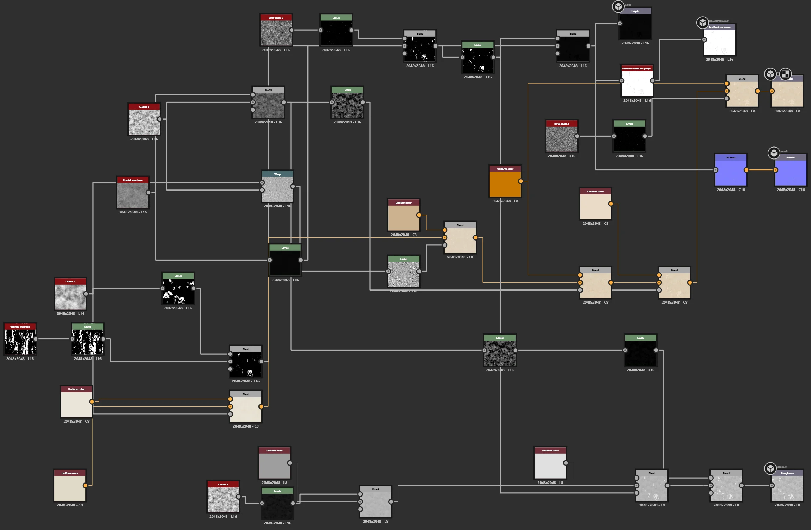

← Unreal


Substance Designer → Substance Painter → Unreal Engine
Substance Designer → Substance Painter → Unreal Engine
鋼琴場景的材質：先在 Substance Designer 程序化製作，主要道具再到 Substance Painter 手繪細節，最後在 Unreal Engine 組合成完整場景。
12種材質
12張節點圖
3個軟體
1個完整場景
最終效果：植物
Substance Designer 的 Iray 渲染，有機材質。


最終效果：鋼琴與表面
節點圖



